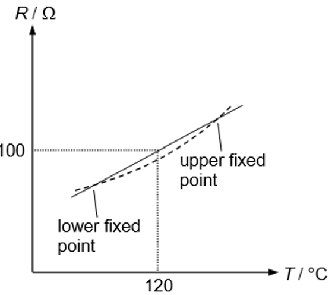
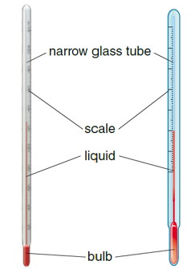

S3 Physics · 3 multiple-choice items
A thermometer makes use of the resistance R of a platinum wire wrapped around a ceramic core to measure temperature T. The thermometer is calibrated for the two fixed points. R is assumed to change linearly with T and the solid line in the figure is used to give the reading of the thermometer. The dotted line shows the actual variation of R with T. If the thermometer gives a reading of 120 °C in a measurement, which of the following statements is correct?

A mercury-in-glass thermometer will response to temperature change more quickly if
Which of the following methods can improve the sensitivity of a liquid-in-glass thermometer?
(1) Reduce the diameter of the glass tube.
(2) Increase the length of the glass tube.
(3) Use a liquid which expands less for the same temperature increase.

Teacher page · 3 items
Answer: B. The actual temperature is higher than 120 °C.
Guide: The reading 120 °C comes from the solid (linear) scale, so the measured resistance is 100 Ω. On the actual (dotted) curve, R = 100 Ω occurs at a temperature higher than 120 °C.
Answer: B. the thickness of the wall is reduced.
Guide: A thinner wall lets heat reach the mercury faster, so the thermometer responds more quickly. A narrower tube or larger bulb changes sensitivity, not response time.
Answer: A. (1) only
Guide: A narrower tube gives a larger column rise for the same volume expansion. A longer tube mainly affects range. A liquid that expands less makes the column rise less, so sensitivity falls.